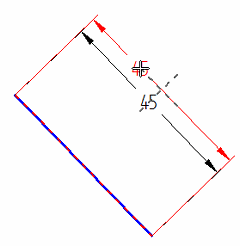
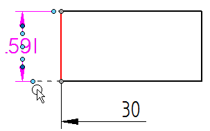
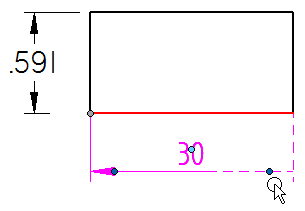
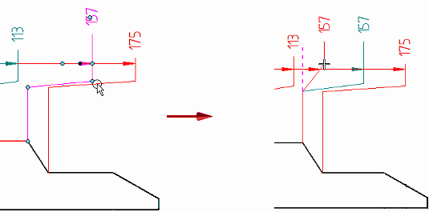

Snap indicators for dimensions
When you drag a dimension handle, dashed lines indicate snap-to positions and connection points.
For information about the handles mentioned below, see the help topic Dimension edit handlles.
- Dimension text
-
When dragging the dimension text or its light blue edit handle, the intersection of two dashed lines indicates the snap position for the text.

- Dimension projection lines
-
When you select a dimension whose projection lines are turned off or are shortened, dashed lines indicate what the projection lines are connected to.
Example:In this ANSI dimension, an edit handle was used to shorten the projection line. The dashed line indicates the geometry connection point.

In this ISO dimension, the terminator handle was used to display a half dimension rather than a full dimension. The dashed lines show the dimension line and the projection line that were turned off.

- Dimension lines with jogs
-
When you select an edit handle on a jogged line and begin to drag it, a dashed line indicates the new orientation of the line if you snap to it.
Example:When you begin to drag the edit handle at the jog shown in the image at left, you can snap to the dashed line shown in the image at right to straighten the projection line.

How do I
Edit a 2D dimension (sketch, profile, draft)Move a dimension
Display a half dimension
Set terminator size and shape
Change dimension behavior
Change the orientation of a dimension
Break a dimension projection line
Remove breaks from a dimension projection line
Change the parent of a dimension by dragging it
Reattach a dimension or annotation using the Attach Dimension command
Add and remove jogs on a dimension
Activate a part for dimensioning in a draft quality view
Learn more
Dimension edit handlesLook up more details
Attach Dimension commandAdd Projection Line Break command
Remove Projection Line Break command
Activate Part command